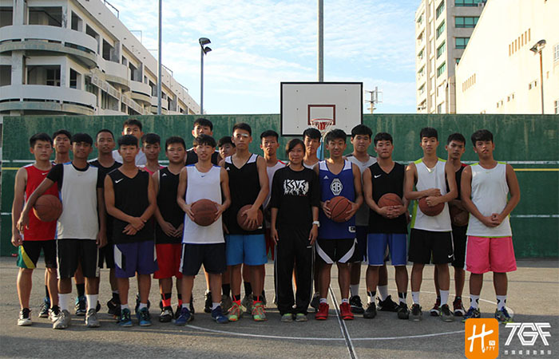

貼文時間：2017/05/25

位於高雄三民區，坑疤的水泥球場，框啷聲此起彼落，一群追逐夢想的大男孩正書寫著青春的詩，他們是高雄高工，於103~105學年度完成乙級聯賽高雄區預賽三連霸……。
位於高雄三民區，坑疤的水泥球場，框啷聲此起彼落，一群追逐夢想的大男孩
正書寫著青春的詩，他們是高雄高工，於103～105學年度完成乙級聯賽高雄區預賽三連霸……。
雄工籃球隊成立11個年頭，並於98學年度榮獲全國第八的佳績，當時帶隊的正是現今雄工常嫚芸教練，教練說到：「當年球隊較為成熟，要不是當時主力球員衝突到獨招考試，不然名次有可能再往上排的。」教練也提到往年訓練方針，以基本功和體能、重訓為主是必然，此外更加強球員的投籃能力，教練說到：「好的戰術再怎麼跑，投不進都免談！」 言下之意，投籃訓練是重要的一環。
進攻上，常教練並沒有給球員設限，她表示自己更重視球員本身的默契，因此不會畫太多戰術給球員，除了最後的幾秒鐘；防守上，雄工以2-2-1及全場大三為主，常教練說：「希望以進攻代替防守，畢竟比賽是比誰得分多的……。」
今年的雄工在南區複賽打進最後六強，創下隊史第二佳的紀錄，雖然離全國八強差了一步，整體表現常教練仍給球員高度肯定，主力球員鍾子丹表示：「會覺得可惜，但這就是青春的一部份，一路走來，經歷了很多事，堅持到現在覺得不可思議，但也因為籃球學到了很多東西，非常值得且感謝。」他更說到三年來印象最深刻的就是完成高雄區域預賽的三連霸，就像是高雄的王者般，打起球來更有信心。接下隊長火炬的是高二後衛許子謙，有出色控球能力的他希望能承襲隊長的鋼鐵意志，和得分主力范哲浩一起延續雄工在高雄區的霸業，並在明年更上層樓!
在雄工有個特殊的懲(體)罰(能)訓練，學弟要是練球遲到或做了違反隊規的事，會被叫到校內泳池，懲罰就是在一定時間內，抓到學長們放入泳池的金魚，有被操過的學弟無一不喊：好累！！算是很有風格的遊(懲)戲(罰)呢～
談及明年度的目標，常教練表示球隊不因今年的失敗而氣餒，更將目標指向全國四強，展現十足的企圖心！對於帶隊將邁入第12年的常教練來說，最大的收穫莫過於跟著這支球隊成長，在訓練中思考教育，透過教育引導學生的未來，培養學生自立的能力，能夠在每個階段為自己設定目標並實踐，是常教練最重視的環節。
今年度距離全國八強僅差一步的雄工，整裝帶隊，捲土重來，誓言在新的賽季突破自我，並延續高雄區的連霸紀錄，心中的籃球信仰高懸在坑疤的球場上，沒有停留，只有向前走，他們是高雄高工。